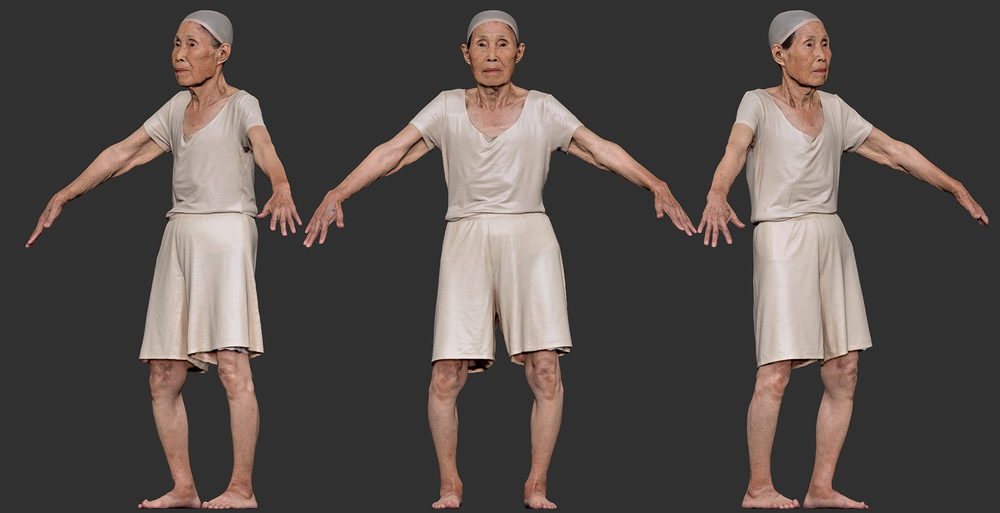

Jonghoon AhnTechnical Game Designer · Real-Time Systems
I prototype gameplay systems in Unity C#, shape interactions through responsive animation and shaders, and build workflows that connect design with engineering. My work spans interactive games, real-time characters, XR, and production-ready engine systems.
Built around the role.
Technical game design requires both authored experiences and the systems that let a team keep improving them. Each area below links to a project, existing production experience, or an explicit next build.
C# is an accepted language in the job listing; C++ is preferred, not asserted here. The online co-op build and commercial live-game operating experience are not presented as completed work. Encounter Studio's creature behavior is a proposed extension.
Selected Projects
10 selected case studies · existing production and defined next builds
3D gameplay programming & player feedback
C# prototyping · Interactive mechanics · Rich and legible feedback
Real-Time Game Systems
For Erick Oh’s independent game, I built player-responsive C# and HLSL systems: directional inputs alter mesh flow, proximity coordinates raymarched effects, and four fixed-topology states support consistent transformation.

Graffiti Freedom
A VR spray-painting mechanic that allows players to change the environment directly. Particle collisions update a RenderTexture paint mask, while a custom shader retains and displays the resulting marks on world surfaces.
Designer-facing tools & visual scripting
Designer-authored game rules · Visual scripting · Reusable feedback and debugging
Encounter Studio — Working Title
An encounter-authoring toolkit designed for the Windward co-op game. Designers edit player conditions, hold times, shared-world actions, camera/VFX feedback, and reactive creature behaviors without changing the core C# rules. Includes an interactive browser-based rule preview.

Blueprint Interaction Systems
Implemented Blueprint trigger, state-transition and playback-loop logic for a real-time digital-human production. Unreal Sequencer, character animation, camera and lighting content connect through editable in-engine systems.
Multiplayer, networking & deployed systems
Developed multi-user TCP installation · New two-client co-op game + release cycle in progress
Windward
A two-player co-op game about creating a shared current. Excess lift destabilizes a drifting seed; timed steering creates Wind Resonance, opens new paths, and changes how a guardian creature responds. Local controls are playable; the Unity online build is the next milestone.
Jemulpo Photo Studio
A public installation designed for up to four simultaneous visitors. I integrated Unity C#, computer-vision processing, automatic image archiving and TCP delivery to an external display wall—an operational, cross-device interactive system.
Maya, character animation & cloth
Maya or 3D engines · Rigging and retargeting · Runtime simulation

Maya Character & Animation Pipeline
Actual Maya work from Shininho and Gang Se-hwang: scanned-mesh preparation, symmetry rebuild, retopology, UV and facial-rig work, HumanIK motion cleanup, and delivery to Unity and Unreal.
Mobile Character Runtime
A playable Unity Android character sample testing multiple animation states, humanoid retargeting, runtime cloth, look-at behavior, and touch camera controls. The pipeline was verified in an APK rather than only in the editor.
NPCs & experimental interaction
NPC behavior · Player interaction · Experimental game concepts

Escape Metro
A Unity VR escape game in which conversation becomes a puzzle: players question an AI NPC to uncover password information and progress toward escape. Voice, dialogue, character performance and spatial exploration form a single player loop.

NARCI / Be NARCI
Paired Unity VR experiences using tracked hands, material response, and spatial staging as interactive mechanics. Touch, pinch, and grab events are translated into runtime states and visible changes inside the environment.
About
I am a California-based technical artist and developer working across games, VR, interactive installations, and digital humans. My focus is on making expressive ideas work as clear, responsive real-time systems—and helping art, design, and engineering work together through production.
Currently pursuing a PhD in Media Arts and Technology at UC Santa Barbara, following an MFA in Art and Technology from CalArts. Authorized to work in the U.S.; no sponsorship required.